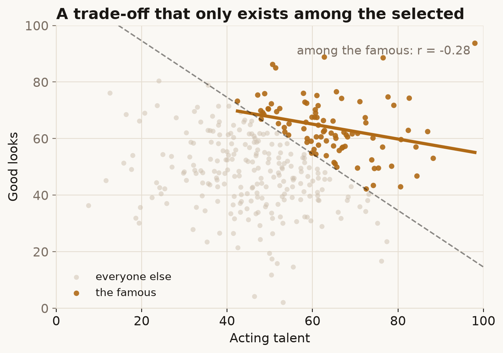

Pick a group by some standard, and two qualities that are unrelated in the world can suddenly look like a trade-off — not because they really clash, but because your filter let in anyone who had enough of either.
Try it
Suppose acting talent and good looks are unrelated in the general population. Drag the cutoff from Everyone toward Only the famous — where you need one or the other to break through.
What's going on
In the whole crowd the two traits are a shapeless blob — no correlation. But fame needs a high combined score, so the famous are everyone above a diagonal line. Inside that selected corner, the very talented tend to be ordinary-looking and the gorgeous tend to be middling actors — because if you're short on one and still made it, you must be long on the other. The negative correlation is manufactured entirely by the cutoff.
In causal terms, fame is a collider: talent and looks both point into it. Selecting on a collider (only looking at the famous) opens a back-door path between its causes and links them. It's the mirror image of confounding — there you adjust to remove a spurious link; here adjusting (conditioning on the collider) is what creates one.

In the real world
Joseph Berkson described this in 1946 for hospital data: two diseases that are independent in the population can appear negatively associated among hospital inpatients, because being admitted often requires having at least one of them. Sackett later catalogued it as "admission rate bias." The same mechanism explains a lot of everyday cynicism — "why is the food good but the service bad at popular restaurants?" — wherever you only ever see the cases that cleared some bar.
How not to get fooled
Ask how your sample was selected. If membership depends on several traits at once, correlations measured within the sample can be artefacts of the gate, not facts about the world. The rule of thumb that mirrors confounding: don't control for (or select on) anything that your cause and effect both influence.
Sources
- J. Berkson (1946), Limitations of the Application of Fourfold Table Analysis to Hospital Data, Biometrics Bulletin, 2(3): 47–53. doi
- D. L. Sackett (1979), Bias in analytic research, Journal of Chronic Diseases, 32(1–2): 51–63. doi
- J. Pearl (2009), Causality (2nd ed.), Cambridge University Press — colliders and selection bias.